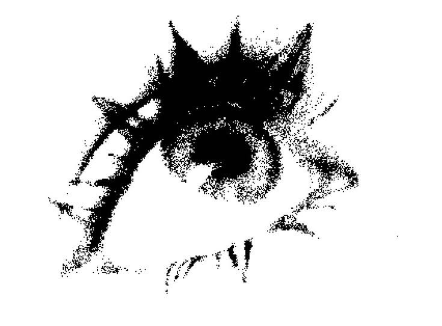
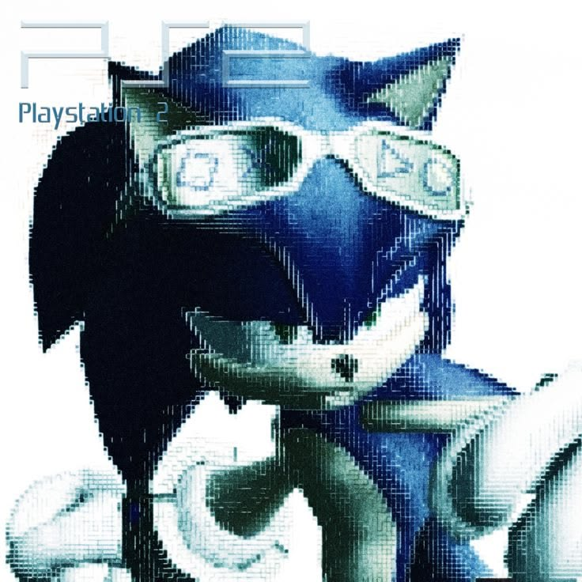

About Akansh Rawat
I’m a developer and designer studying Computer Engineering with an AI & ML specialization at KIIT University. I like making software feel clear, thoughtful, and genuinely useful.


How did you get into technology?
I started with curiosity: taking interfaces apart in my head, learning how systems worked, and trying to turn small ideas into things people could use.
Code gave those ideas structure. Design gave them direction. The combination kept me interested, so I kept learning, experimenting, and building.
What's your main thing?
Being exact enough to notice the details, while staying flexible enough to keep the idea moving. Most of my work begins with understanding a problem, simplifying it, then shaping the interface around the people using it.
People feel a product before they understand it, so I start with that feeling and build everything else to hold it up. I want to make work that is useful, understandable, and hard to forget.
What are you interested in?
AI, human-computer interaction, interface design, cloud systems, music, visual culture, and the small decisions that make an experience feel natural.
Experience
- BrewCrew Club
- Vayora
- KIIT University · B.Tech CSE
- Independent projects
How can I get in touch?
Say hi from the top right, or reach out directly at akanshrawat.in@gmail.com.